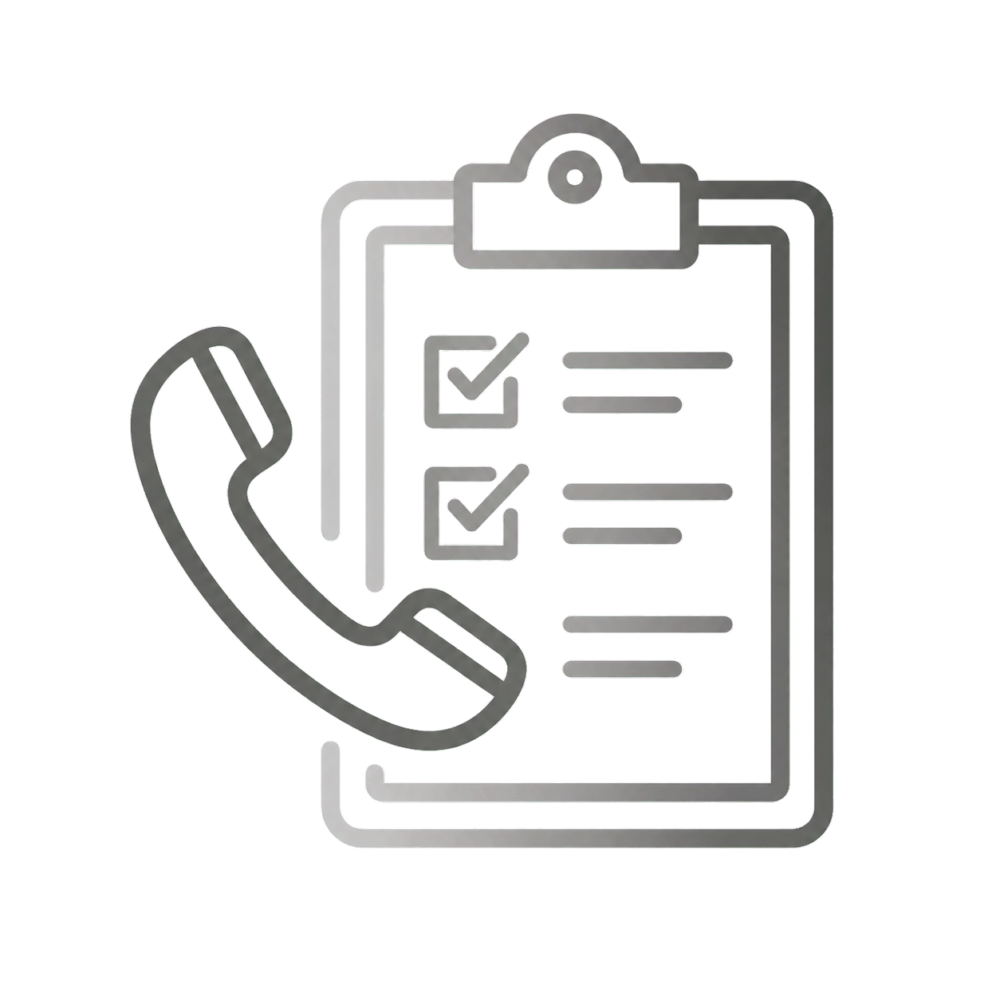
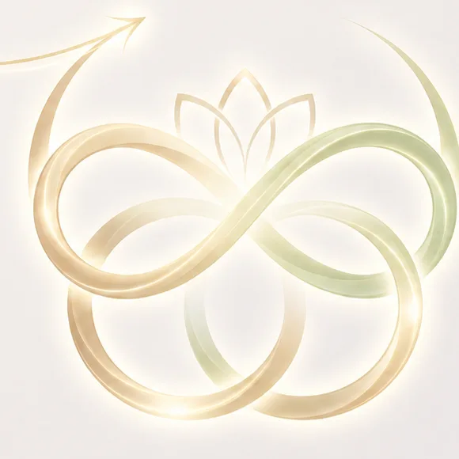

お客様との最初の接点こそが、
ブランドの価値を決める場所です。

これまでの
「予約受付窓口」
（コストセンター）
予約や問い合わせを「ただ処理する」だけの場所。効率だけが求められ、お客様との会話は事務的になりがちでした。

これからの
「お店の心臓部」
（プロフィットセンター）
お店とお客様をつなぐ「コンシェルジュ」。深い傾聴から新しい提案（売上）を生み出し、お客様を一生モノのファン（LTV）へと育てる場所です。
システムの力で「作業」を減らし、人にしかできない「おもてなし」に集中できる環境をつくります。
しかし現状は、システムや情報の分断が
「おもてなし」の邪魔をしています。
「少々お待ちください」の連続
別のシステムを開いたり、過去のメモを探したりして、お客様を電話口でお待たせしてしまう。
「前にもお伝えしたのですが…」
メールや前回の電話でのやり取りが引き継がれておらず、同じ説明をさせてしまう。
タイミングを逃すご案内
本当は今すぐフォローすべきお客様（施術後の経過など）を見つけ出すのに時間がかかりすぎる。
これらはすべて、スタッフのスキル不足ではなく「環境（システム）」が引き起こす、お客様への「がっかり」です。
スタッフの「心の余裕」が、
最高のおもてなしを生み出します。
01
システムの支援
作業の自動化、情報の統合、迷わない画面
生み出されるもの
02
スタッフの余裕
焦らずお客様の声に耳を傾ける「時間」と「心」の余白
結果として
03
最高のおもてなし
お客様一人ひとりに寄り添ったご案内と深い安心感
1996年からコンタクトセンターの進化を支えてきたMITシステム研究所は、大手美容系企業様と共に歩んできた知見を結集しました。ITの知識がなくても直感的に使える、5つの「おもてなしツール（QuickCRM）」をご提案します。
おもてなしを支える、
5つの機能。
FEATURE 01
① ひと目でわかる「お客様ノート」で、いつでも続きからお話しできます。
これまでは
「メールで相談した件ですが…」と言われると、別の画面を探す必要がありました。
これからは
メールも、チャットも、お電話の履歴も。すべてがお客様ごとに1つの画面にまとまります。
もたらす価値誰が対応しても「○○様、先日のチャットの続きですね」と、まるで専属コンシェルジュのようにスムーズなお話し合いが始まります。
FEATURE 02
② 電話とメモ帳が1つになった「シンプルで使いやすい画面」で、会話に集中できます。
これまでは
電話の操作、顧客情報の入力、録音の確認…いくつもの画面を切り替える応対は、気を散らせていました。
これからは
すべての操作がWebブラウザ上の「1つの画面」だけで完結します。
もたらす価値画面操作に迷うことがなくなり、目の前のお客様との「会話」だけに100%集中できます。操作トラブルで慌てることもありません。
FEATURE 03
③ お話しした内容の「自動まとめメモ」が、サービスの質を守ります。
ご相談内容を要約
通話をテキスト化して登録
画面上で可視化
これまでは
複雑なお電話の後は、記録を残す（後処理）だけでも大変な労力がかかっていました。
これからは
AIが通話内容をテキスト化し、要約（サマリー）を自動で作成・登録します。
もたらす価値負担が劇的に減るだけでなく、次に誰が対応しても完璧に状況を把握できる「均一で質の高い記録」が残ります。
FEATURE 04
④ 「いつもの担当者」へつなぐ安心設定が、お客様との絆を深めます。
これまでは
お電話のたびに違うスタッフが対応し、その都度、状況をお伺いしなければなりませんでした。
これからは
「前回対応したスタッフ」へ自動的にお電話をつなぐことができます。
もたらす価値「あ、○○さん、この間の件だけど…」と、お客様にこの上ない安心感と信頼感を与え、成約率の向上に直結します。
FEATURE 05
⑤ 今すぐお電話すべき方の「自動リスト作成」で、心温まるご案内を。
これまでは
ご案内が必要なお客様を探し出す作業に時間がかかり、架電のタイミングを逃していました。
これからは
今アプローチすべきお客様のリストをきめ細かく自動作成。大量の自動発信機能も備えています。
もたらす価値「ちょうど連絡が欲しかった！」と思っていただける絶妙なタイミングで、心を込めたご案内（アポイント獲得）が可能になります。
単なる「受付窓口」から「お店の心臓部」への、
確かな進化。
全てが繋がることで生まれる、
一生モノのファンを創る「好循環」。

Step 1
システムの支援
QuickCRMの5つの機能
Step 2
スタッフの時間と心の余裕
負担軽減・迷いゼロ
Step 3
120%のおもてなし
深い傾聴・的確な提案
Step 4
お客様の感動・安心
「私のことを分かってくれている」
Step 5
LTVの向上
リピート・継続・新たなファン化
Step 1
システムの支援
QuickCRMの5つの機能
Step 2
スタッフの時間と心の余裕
負担軽減・迷いゼロ
Step 3
120%のおもてなし
深い傾聴・的確な提案
Step 4
お客様の感動・安心
「私のことを分かってくれている」
Step 5
LTVの向上
リピート・継続・新たなファン化
システムを導入する目的は「効率化」ではありません。
効率化によって生まれた時間を「おもてなし」に還元することです。
次世代の「おもてなし」を、
ぜひ一度ご体感ください。
実際の画面操作がいかにスムーズか、AIがいかに正確にメモをまとめるか。皆様の目で「シンプルで使いやすい画面」をお確かめいただけるデモンストレーションをご用意しております。